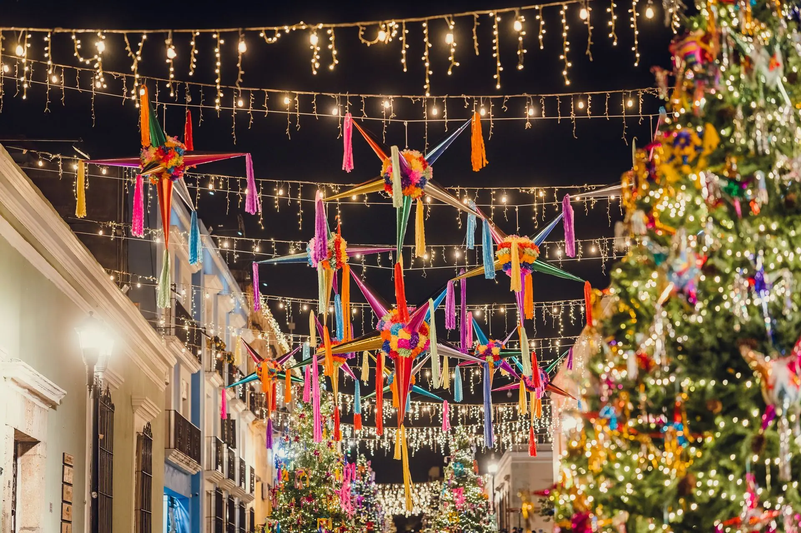

December 16 to 24
Las Posadas lesson: the nine nights and the song at the door, in 30 minutes
A free, no prep Las Posadas lesson for Spanish or any class, grades 4 to 12: the nine nights, where it is celebrated, and the call and response at the door.
What your class will see
Press Teach it now and the board plays these in order. Click any slide to start there.
What it is
Las Posadas is a tradition of nine nights, from December 16 to December 24. The word posada means inn or lodging. Each night neighbors walk from house to house with candles, and the group outside asks for a place to stay. The tradition recalls the Christmas story of Mary and Joseph looking for shelter, and it is both a religious and a community celebration.
At the door, the asking and the answering are sung. The group outside, the peregrinos (pilgrims), sings to ask for posada. The group inside, the posaderos (innkeepers), answers, also in song. In the traditional version the pilgrims are refused at each house until they reach the last one, where the door opens and the celebration begins. Practices vary from one community to another.
Las Posadas is celebrated in Mexico, Guatemala and other parts of Latin America, and by Hispanic communities in the United States. The Handbook of Texas reports posadas in San Antonio in the mid-1800s. Mexico's Secretaría de Cultura traces the tradition to the Misas de Aguinaldo, Christmas masses of colonial Mexico.
The nine nights end on December 24, Nochebuena (Christmas Eve), with a party. Breaking the piñata is a high point, and homes serve foods such as ponche, tamales and buñuelos. This lesson teaches about the tradition. Students are not asked to take part in any religious practice, and in the activity they play travelers and hosts.
How to run it
30 minutes, 6 steps. The time on the left is when each step starts.
-
0:00
Warm-up
4 minOn the boardImagine a long walk on a cold night. You knock on a door and ask for a place to stay. What do you say? What might the answer be? Write the first two lines of the conversation.
You do- Students write two lines of the conversation, in English or in Spanish.
- Take three volunteers to read their lines aloud.
Say: Today's tradition is about a door, a song, and one question: is there room for us?
-
4:00
Five facts about Las Posadas
5 minOn the board- Las Posadas lasts nine nights, from December 16 to December 24.
- Posada means inn or lodging. The nights recall Mary and Joseph's search for shelter in the Christmas story.
- Each night neighbors walk with candles from house to house. The group outside asks for lodging in song, and the group inside answers in song.
- In the traditional version, the pilgrims are refused at each house until the last one, where the door opens to a celebration.
- The celebration includes a piñata and foods such as ponche, tamales and buñuelos.
You do- Read the five facts aloud, one at a time.
- After fact 3, ask which words tell us this is a call and response.
- Find Mexico and Guatemala on a map if one is handy.
-
9:00
Roles and words
6 minOn the boardLos peregrinos (travelers) are outside. Los posaderos (hosts) are inside. Model lines: Peregrinos: Buenas noches. Somos peregrinos y pedimos posada. Posaderos: Lo siento, aquí no hay lugar. Peregrinos: Estamos cansados. Por favor, ¿hay un lugar para nosotros? Posaderos: ¡Pasen! Aquí hay lugar para ustedes.
You do- Read the model lines aloud and have the class repeat each line. Split the class in half: one half answers as the peregrinos, the other as the posaderos.
- Explain that a classroom version uses the roles of travelers and hosts. Students do not play Mary and Joseph.
- For classes that do not study Spanish, use the English meaning of each line and the same pattern: ask, refuse, ask again, open the door.
Say: The words are simple, but the pattern matters: ask, be told no, ask again, and then the door opens.
-
15:00
Write your own door song
8 minOn the boardGroups of four: two peregrinos and two posaderos. Write a four-line exchange. Line 1: the peregrinos ask for posada. Line 2: the posaderos say there is no room. Line 3: the peregrinos ask again. Line 4: the posaderos open the door. Add one detail of your own, such as the weather, a candle or the time of night.
You do- Groups write their four lines in Spanish, or in English for a non-Spanish class. Encourage them to change the model lines, not copy them.
- Circulate and check that each line has one speaker and that the pattern is complete.
- Spanish teachers can have groups use the vocabulary list on this page.
-
23:00
Perform at the door
4 minOn the boardPeregrinos stand outside the door. Posaderos stand inside. Speak or sing your four lines. When the door opens, everyone says: Pasen.
You do- Groups take turns performing at the classroom door, or at a desk used as the door.
- After two or three groups, ask the audience which lines made the pattern of asking, refusing and welcoming clear.
-
27:00
Exit ticket
3 minOn the boardIn one sentence, in English or Spanish: who is outside the door, who is inside, and what do they say to each other?
You do- Students answer on a scrap of paper and hand it to you at the door.
Discussion questions
Open an answer when you want it.
What does the word posada mean, and why is it a good name for this tradition?
A posada is an inn or lodging. The tradition is a search for a place to stay, so the name says what the people at the door are asking for.
Why might the tradition use a song in two parts instead of one person speaking?
Answers vary. A song with two groups lets everyone take part, both outside and inside, and it turns a story into something a whole neighborhood can perform together. The Handbook of Texas describes Las Posadas as a combination of procession and drama.
Why might a tradition that began with Christmas masses end up in homes and streets?
Mexico's Secretaría de Cultura traces the posadas to the Misas de Aguinaldo of colonial Mexico. Accept reasoned answers, such as that homes and streets let a whole neighborhood take part.
Exit ticket
In one sentence, in English or Spanish: who is outside the door, who is inside, and what do they say to each other?
The peregrinos (pilgrims) are outside and ask for posada. The posaderos (innkeepers) are inside and answer, at first saying there is no room. In Spanish: Los peregrinos están afuera y piden posada. Los posaderos están adentro y contestan.
Make it fit your class
Younger students
For kindergarten to grade 3, skip the writing. Teach two lines in Spanish, Pedimos posada and ¡Pasen!, with half the class saying each. Students draw a candle and a door and tell you one thing that happens at the door.
Older students
For grades 9 to 12, or Spanish 3 and up, have students read the Secretaría de Cultura article in Spanish and compare its two accounts of where the posadas came from with the México Desconocido account. Students write three sentences in Spanish on how the sources differ.
Spanish class version
In Spanish, the tradition is Las Posadas, and pedir posada means to ask for lodging. The words below are enough for a four-line door dialogue.
- la posadainn, lodging, and the nightly celebration
- pedir posadato ask for lodging
- el peregrino, la peregrinapilgrim, traveler
- el posadero, la posaderainnkeeper, host
- la velacandle
- la puertadoor
- abrirto open
- no hay lugarthere is no room
- la NochebuenaChristmas Eve
- la piñatapiñata
Task: In groups of four, students write a four-line exchange in Spanish: the peregrinos ask for posada, the posaderos say there is no room, the peregrinos ask again, and the posaderos open the door. Each group adds one detail of its own, such as the weather, a candle or the time of night, and performs the exchange at a door or a desk.
Want it printed? These files from our TPT store go with this lesson: Las Posadas Pinata Craft, Poinsettia Craft, Spanish Christmas Activities.
Where the facts come from
- Handbook of Texas, Folk Drama (Texas State Historical Association). Used for the nine nights from December 16 through December 24, the sung requests and responses, refusal until a last dwelling, and posadas in San Antonio in the mid-1800s.
- EBSCO Research Starters, Las Posadas. Used for the dates, the procession with candles, the children's request at the door, and the party with a piñata at the end.
- Secretaría de Cultura de México, Y tú, ¿cómo celebras las posadas?. Used for the dates from December 16 to 24, the colonial origin in the Misas de Aguinaldo, and the piñata, ponche, tamales and buñuelos.
- México Desconocido, ¿Sabes qué significa y cómo se organiza una posada?. Used for the two groups, one asking for posada outside and one answering inside, and the piñata and the foods.
- Excélsior, Canto para pedir posada. Used for the roles of peregrinos and posaderos, who sing alternating parts at the door.
- Wikipedia, Las Posadas. Used for the meaning of posada and the countries where it is celebrated (Mexico, Guatemala, El Salvador and Honduras, among others).
Image credits
- Decoration on Street at Night by Jhovani Morales, Pexels License. Source.
- Open Brown Wooden Door by George Shervashidze, Pexels License. Source.
- BunuelosCarmenDF by Thelmadatter, CC BY-SA. Source.
- Candlelit Night Scene in Pedraza, Spain by Mike Art, Pexels License. Source.
- A Way to Lighten up Doors During Night Time by Erik Mclean, Pexels License. Source.
- Glass Windows on Concrete Wall by Ekaterina, Pexels License. Source.
- A Front Porch of a House by Billy Van Tran, Pexels License. Source.
- Lanterns with Wax Candles on Pavement near Building Wall at Night by Kassandre Pedro, Pexels License. Source.
- Colorful Street Decorations in San Miguel de Allende by Tiarra Sorte, Pexels License. Source.
- Colorful Piñatas Hanging Outdoors in Cabo by Anthony Dalesandro, Pexels License. Source.
- Ponche en preparación by Wotancito, CC BY-SA. Source.
- Food Tied with Strings on Tray by Vidal Balielo Jr., Pexels License. Source.
- Candlelit Pathway in Pedraza, Spain by Mike Art, Pexels License. Source.


Updated October 31, 2026